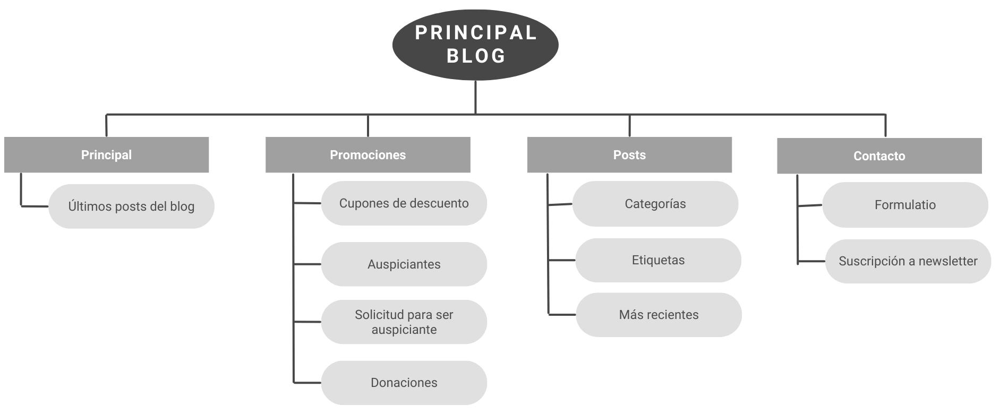

Caso Práctico 2
Proyecto: Blog
Eleonora Rodríguez
Resumen del proyecto
El Producto
Este proyecto consiste en un blog de variedades, orientado principalmente al público femenino.
Duración
Dos meses (abril y mayo de 2023).
El Problema
La mayor parte de los usuarios que visitan blogs suelen frustrarse por la cantidad excesiva de anuncios publicitarios y porque los contenidos que buscan se encuentran enterrados entre contenidos de relleno para fortalecer su posición SEO en motores de búsqueda.
El Objetivo
Lograr construir un blog de fácil navegación que no sature a los usuarios con anuncios publicitarios, ventanas emergentes, ni contenidos no relacionados con lo que se busca, pero aún así cumpliendo con las prácticas recomendadas para posicionamiento SEO.
Mi Rol
Diseñadora UI e investigadora UX.
Responsabilidades
Investigación de usuarios, creación de recorridos de usuario, creación de esquemas, creación de prototipos de baja y alta fidelidad.
Investigación sobre los usuarios
En esta investigación nos enfocamos en lo que busca la audiencia que tenemos como objetivo y los potenciales suscriptores al blog.
En base a la competencia, les preguntamos lo que les falta a los demás y lo que podemos aportar con nuestro proyecto.
Puntos débiles de los usuarios
Publicidad
La mayoría de los usuarios se cansa de que la publicidad excesiva interrumpa su navegación.
Relevancia
Muchos usuarios tienen problemas para encontrar los contenidos que buscan, ya que deben invertir demasiado tiempo en buscar las respuestas escondidas en las entradas de blog.
Navegación
Los usuarios suelen tener problemas para navegar fácilmente las páginas y encontrar lo que buscan.
Persona 1
Silvia Sánchez
Planteamiento del problema: Silvia Sánchez es una profesora de 45 años residente en Madrid que disfruta leer blogs para mujeres, sin embargo suele desmotivarse cuando encuentra navegaciones confusas y es abrumada por anuncios publicitarios.
Edad: 45
Formación: Universitaria
Localidad: Madrid
Familia: Casada, tiene dos hijos menores
Ocupación: Profesora
"No tengo tiempo que perder"
Silvia Sánchez es una profesora de 45 años residente en Madrid. Está casada, tiene dos hijos pequeños, y le gusta leer blogs de variedades en sus momentos de ocio.
Objetivos:
- Quiero ahorrar tiempo y encontrar lo que busco rápidamente.
- Quiero que la navegación en un blog sea fácil, descriptiva e intuitiva.
Frustraciones:
- No quiero ser detenida continuamente por publicidades y anuncios emergentes.
- No quiero que haya contenidos a los que sólo pueda acceder si me suscribo a boletines de noticias.
Persona 2
Liliana Pérez
Planteamiento del problema: Liliana Pérez es una mujer valenciana de 65 años que le gusta leer blogs de variedades en su tiempo libre para entretenerse, pero suele desmotivarse ante la cantidad de anuncios y llamados a la acción (calls to action).
Edad: 65
Formación: Universitaria
Localidad: Valencia
Familia: Viuda, tiene dos hijos y tres nietos
Ocupación: Administrativa
"Yo sólo quiero divertirme y aprender cosas nuevas"
Liliana Pérez es una mujer valenciana de 65 años. Trabaja como administrativa, es viuda, tiene dos hijos y además tres nietos. En sus momentos libres le gusta leer blogs de todo tipo para entretenerse, ya sea probando recetas de cocina nuevas o leyendo sobre novedades del espectáculo.
Objetivos:
- Quiero aprender cosas nuevas.
- Me gusta leer blogs y magazines en línea sobre variedades.
Frustraciones:
- No quiero que me envíen spam si me suscribo a una newsletter.
- No quiero tener que perder tiempo mirando publicidades para acceder a los contenidos que busco.
Mapa del sitio
Prototipo de baja fidelidad (tamaño desktop/escritorio):
Prototipo de baja fidelidad (tamaño tablet):
Prototipo de baja fidelidad (tamaño móvil):
Estudio de usabilidad
Parámetros
Tipo de estudio: Moderado
Ubicación: Buenos Aires, Argentina
Participantes: 5
Duración: 30 minutos
Hallazgos
Hallazgo 1: A los usuarios les agradó que todos los contenidos referentes a auspiciantes y donaciones opcionales se encuentre apartado en su propio espacio, sin interrumpir el flujo de la navegación ni las páginas.
Hallazgo 2: Los usuarios mencionaron que con el diseño actual de los prototipos podrían tolerar hasta tres anuncios publicitarios por página, siempre que se ubiquen en la columna lateral derecha o cerca del cierre de la página.
Hallazgo 3: Los usuarios no desean que su lectura sea interrumpida por más de un anuncio por artículo.
Prototipo de alta fidelidad (tamaño desktop/escritorio):
Prototipo de alta fidelidad (tamaño tablet):
Prototipo de alta fidelidad (tamaño móvil):
Consideraciones de accesibilidad
Para la elección de la paleta de colores, se tomaron en cuenta las personas con posibles problemas de visión que no pudieran distinguir bien entre ellos.
Todos los íconos se encuentran complementados por palabras para facilitar la lectura en dispositivos de asistencia para quienes tienen problemas visuales.
El diseño intenta no abrumar a los usuarios con demasiadas cosas juntas en un mismo espacio. Se dejaron espacios negativos en blanco para que la navegación sea más agradable y menos confusa.